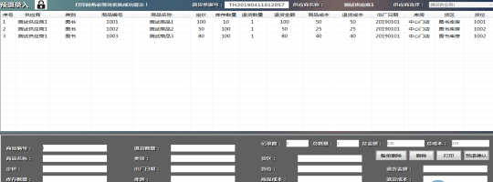
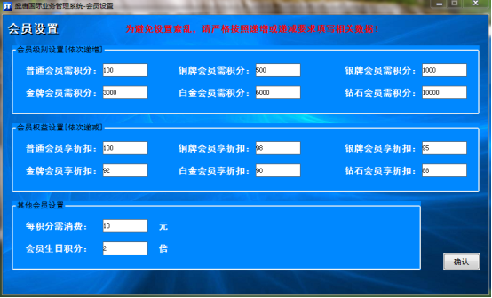
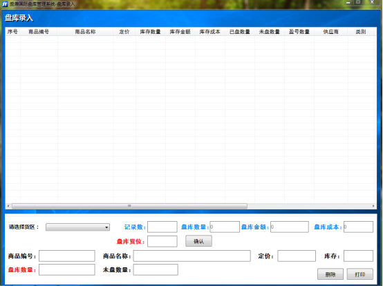

盛唐国际ERP系统操作手册
本系统极易被杀毒软件、安全卫士误删，安装本系统强烈建议删除相关安全软件！
部分功能随着系统更新，操作会有所不同，请依据最新系统操作！
总述：盛唐国际ERP系统（以下简称“本系统”）是一套完整的进、销、存、退、盘的通用行业管理系统。本系统主要包含业务系统、销售系统、财务系统、盘库系统四大系统及副屏系统、锁屏系统两小系统。本系统可单机使用，也在局域网内联网使用（推荐），亦可在互联网上应用（由于当前网速限制，极易造成数据丢失，互联网应用暂不推荐）。本系统需要以下软件支持（必须安装）：
一、软件授权：本系统授权方式为一机二码（授权码和注册码，授权码对本机进行授权使用，注册码限定系统使用时间），首先打开系统目录，点击登录系统-系统提示授权码错误或不存在-确定进入软件注册界面。点击导出机器码并关闭，机器码（stgj.st）会自动导出至桌面，把机器码文件发送至QQ：3086503095，等待接收授权码。请把接收的授权码（stsq.st）放置电脑桌面，再次进入软件目录，点击登录系统-按提示操作即可授权完成。
如桌面不存在本系统快捷方式，系统登录时会提示创建桌面快捷方式。
二、局域网联网布局：(仅需在服务端安装系统，但客户端仍需授权)请按下图布线：
服务端（存储数据）必须常年开机保障其他客户都可随时访问使用，推荐服务端放置门店前台运行副屏系统。服务端、客户端授权方式一样，都为一机二码。服务端需共享本系统所在文件夹，客户端通过共享位置，点击服务端本系统目录的登录系统进行授权、创建快捷方式等操作。
三、锁屏系统：锁屏系统可以在任何窗口点击锁屏按钮进入，通过输入登录用户的登录密码解锁退出锁屏。
四、登录系统：用户初始账户及密码均为“9999”，输入账户密码，选择操作系统，即可登录相应系统。解决登录问题-当系统异常退出导致登录失败时，可尝试点击解决登录问题解除登录占用。
五、初始设置（必须配置）：本系统首次使用需要进行初始设置，进入登录系统，输入账户密码，选择业务系统进行登录。
1、清空数据库：首次使用时，建议清空数据。系统设置-清空数据库，输入用户登录密码及清空数据库密码（初始为“stgj”），点击清空，等待系统成功提示！清空数据前提必须安装Winrar软件！
2、单位设置：数据显示、打印标头是否使用简称，选中使用简称，未选中使用单位全称。此窗口可设置清空数据库密码。
3、角色权限：系统超级管理员权限不可编辑、删除。此窗口可新建、删除角色并设置角色权限。可以根据公司情况设立经理、业务、财务、门市、信息、收银等角色，并配置好相应的角色权限。删除角色会一并删除角色下所有用户，新建角色必须点击权限按钮设定相应权限。权限各项内容不再一一解释。建议信息选定所有权限，其他角色务必清除清空数据库、特殊删除权限，防止误操作删除数据。角色编号不允许重复，建议1001、1002、1003…
4、用户设置：系统设置-用户管理，可进行用户信息维护。用户编号及姓名不允许重复，建议每个部门一个起始编号，如经理角色下用户1001、1002…信息角色下用户2001、2002…
5、基础设置：系统设置-基础设置，这里需要设置大多数基础信息。
（1）、库房设置：系统只允许新建操作，库房编号、名称不允许重复。系统库房不允许操作。
（2）、货区设置：先选择库房，输入货区编号、名称进行新建货区，编号、名称不允许重复，建议每个货区一个初始编号，如A货区1001、1002…B货区2001、2002…货区一经建立系统不允许修改、删除操作。
（3）、货位设置：可依据公司情况设定货位，进行货位详细管理会使工作更加便捷。如盘库时可实现一货位一清单和日常查货，方便校对和查找货物位置。选择货区，可一个个建立货位，亦可输入起始货位号批量新增货位。货位已经新建，系统不允许删除、修改操作。建议一货区一货位段管理，如A货区货位编号为1001-1999，B货区货位编号为2001-2999…便于通过货位区分货物所在货区。
（4）、分类设置：可依据公司情况设定相应货物分类。分类编号、名称不允许重复且新建后不允许其他操作。建议分类越详细越好且分类名称命名方式为名称+税率，方便日后工作按分类进行统计操作，按税率命名，可在系统导出相应明细表后计算相关数据。
（5）、支付方式设置（销售系统应用）：系统自带现金、会员卡2种支付方式。支付方式编号、名称不允许重复，建议1001、1002…此类方式命名。新建支付方式后点击修改，可绑定支付方式二维码，前台销售系统点击投屏按钮可在副屏系统投影收款二维码。可新建抹零支付方式，用于前台零售结账抹零操作，建议选择抹零支付时保留销售小票并由主管签字与收款、结账单一并交财务。
（6）、其他设置：会员卡号是否自动填充（是-新建会员时，会员卡号系统自动生成；否-可根据定制的会员卡录入会员信息。另：本系统支持会员磁卡刷卡硬件设备）；打印功能不再解释；此窗口可设置盘库密码（生成盘库计划、盘库确认时使用），初始密码为“stgj”；可设置公司logo，所有打印单据均可显示；可设置销售系统打印小票的欢迎语、结束语；可设置销售系统结账播报语音；可选择销售系统背景色，目前有默认色和黑白简约色两种；可设置系统自动备份时间，建议选择日常工作时段，如101010（上午10点10分10秒系统自动备份数据）；可选择是否开启副屏（依据公司情况）并设置副屏广告；可设置是否打印收款单（销售员向财务提供的收款凭证）；可设置零售是否打印公司信息；可设置前台零售是否打印促销图片（可添加公司二维码、促销活动等信息）等。
（7）、供应商录入：供应商管理-供应商录入/供应商批量导入。供应商编号、名称不允许重复，供应商名称请勿使用纯数字或以数字开头。供应商查询及修改可进行供应商查询、修改操作，亦可查看供应商业务明细信息。
（8）、客户录入：客户管理-客户录入/客户批量导入。同供应商。系统内置内部客户，用于日常自用批销，内部客户自用批销系统自动按进货成本计算数据。客户名称建议以地区+姓名命名，方便区分客户。
六、到货、退货、对账、财务（付款、结算、发票绑定）操作（此为一系列流程）：
1、到货操作：到货管理-到货录入/到货批量导入。到货录入系统会自动记录数据，中途退出时，使用该操作员账户再次进入系统的到货录入窗口时可继续操作，解除到货占用窗口可清空已记录未完成的到货录入信息，解除到货占用仅对到货录入生效。
（1）、到货录入：选择货区，输入供应商到货单据的原始单据号确认，录入清单上发货日期至原单日期框，选择供应商、类别，输入货位、商品信息即可暂存商品到货信息。录入全部到货商品后，点击确认转入即可生成系统相应数据。其他特殊要求请详细阅读系统窗口界面的相关提示。
（2）、到货导入：单次导入请勿超过1000条，如已超过请分批次导入！其他特殊要求请详细阅读系统窗口界面的相关提示。
（3）、到货查询：统计分析-到货情况，录入相关查询条件可查询到货详细记录。选中商品，点击业务卡，可查询该商品的所有进销存退业务明细。选择统计方式（目前提供原始单据、供应商、类别、经办人、结账情况五种统计方式），可按相应的统计方式统计到货汇总数据。
2、退货操作：退货管理-预退录入。退货录入系统会自动记录数据，中途退出时，使用该操作员账户再次进入系统的预退录入窗口时可继续操作，解除预退占用窗口可清空已记录未完成的预退录入信息。
（1）、预退录入：退货管理-预退录入。选择供应商，输入商品编号、预退数量等信息进行商品预退。点击预退确认系统生成相应数据。

（2）、预退差异确认：退货管理-预退差异确认。选择预退单据，输入供应商提供的实际退货金额，点击差异确认。如确认有差异，系统会自动形成退货差异数据计入成本，具体数据位置请参考窗口提示，亦可在相应窗口查询-业务卡。退货差异成本财务系统统计利润时会自动计算。
（3）、退货查询：统计分析-退货情况，录入相关查询条件可查询退货详细记录。选中商品，点击业务卡，可查询该商品的所有进销存退业务明细。选择统计方式（目前提供退货单据号、供应商、类别、经办人、结账情况五种统计方式），可按相应的统计方式统计退货汇总数据。
3、对账操作：业务系统-财务管理-供应商按单对账。选择供应商，点击查询，勾选到货/退货单据信息，点击生成对账单即可。此窗口显示供应商所有未结单据信息，可在此窗口与供应商进行未结对账。此窗口会生成供应商业务信息，可在供应商管理-供应商查询及修改-业务信息，查询明细。
4、付款操作：此系列操作在财务系统中进行，请从登录系统进入财务系统。
（1）、付款操作：付款管理-付款确认。选择供应商，输入付款金额及备注（货款等备注信息），点击付款确认即可。
（2）、付款查询：付款管理-付款查询。输入筛选条件查询即可。
5、结算操作：此系列操作在财务系统中进行，请从登录系统进入财务系统。
（1）、按单结算：结算管理-按单结算。选择供应商，点击查询供应商信息，勾选待结算对账单据，点击结算。点击列表未结对账单据，点击单据查询，可查询对账单据明细。
（2）、结算查询：结算管理-结算查询。查询已结算的单据可以在结算批次号框内输入“JS”查询，查询后点击单据，再点击单据明细按钮，可查询单据明细。
6、发票操作：此系列操作在财务系统中进行，请从登录系统进入财务系统。
（1）、发票维护：发票管理-发票维护。此窗口可以新增、修改、删除等操作，来编辑供应商寄来的发票信息。
（2）、发票绑定：发票管理-发票绑定。此窗口可以把已结算单据和发票进行绑定、解绑操作。
七、财务系统其他操作：
1、收支管理（可用于现金、存款日记账）：
（1）、收支设置：收支管理-收支设置。可新增、修改及删除收支项目。请仔细阅读窗口界面详细说明，便于工作查询需求。
（2）、收支录入：收支管理-收支录入。可按收支编号/名称查询收支项目后，输入收支金额、明细等信息进行收支录入。
（3）、收支查询：收支管理-收支情况。输入筛选条件可查询相应收支明细。
2、利润管理（重磅功能）：利润管理-利润统计。可统计查询输入日期范围内的利润信息，具体说明请查看窗口界面提示。此功能可短时间内迅速查询营业利润。
3、做账管理（建议每月结账前做一次账，重磅功能）：
（1）、货源暂估做账【统计欠款情况（欠供应商）】：做账管理-货源暂估做账。可统计日期范围内供应商暂估数据。货源暂估=到货未结-退货未抵扣-退货差异。
（2）、发货暂估做账【统计欠款情况（批销客户欠款情况）】：做账管理-发货暂估做账。可统计日期范围内发货暂估数据。具体说明请查看界面说明。
（3）、会员信息做账【统计会员剩余积分与储值】：做账管理-会员信息做账。可统计日期范围内会员相关剩余积分、金额等数据。具体说明请查看界面说明。
4、做账恢复：含货源做账恢复、发货做账恢复、会员做账恢复。主要是对做账管理已生成的做账单据进行恢复。恢复成功后可在做账管理菜单重新做账。
5、会计凭证管理（重磅功能）：
（1）、会计科目设置（基础设置）：含会计科目批量导入与会计科目维护。
A、会计科目批量导入：请仔细阅读界面相关要求进行导入操作，每次导入都会清空原有数据。
B、会计科目维护：可新增、修改及删除会计科目信息。
说明：请严格参照会计标准录入会计科目，建议初次启用系统使用导入功能，日后使用会计科目维护进行增、修、删操作。
（2）、会计科目余额查询：会计凭证管理-会计科目余额查询。可查询会计科目余额情况。可点击会计卡，查看相关会计科目或所有会计科目财务操作明细。
（3）、凭证管理：
A、凭证模板维护：可新增、修改及删除凭证模板。编辑好凭证模板，更便于凭证录入快速操作，只需在凭证录入窗口选择模板即可。
B、凭证录入：选择凭证模板，如果事先已创建相应凭证模板，可直接选择快捷使用，也可直接输入凭证类型。输入其他内容，可新增凭证。会计科目栏可输入会计科目二级分类编号或二级分类名称后点击查询按钮，系统可快速填充会计科目。
C、凭证查询与恢复：可输入筛选条件查询相关凭证。选择相关凭证，点击明细按钮，进入凭证明细窗口界面可进行凭证恢复操作。
八、销售操作：（含业务系统批销和销售系统零售）
1、业务系统销售管理：从登录界面选择业务系统登录。此菜单针对团购客户，即下级分销商。
（1）、批销开单：销售管理-批销开单。选择客户，选择折价方式（目前系统有3种折价方式：整单折扣-整单打折；一种一折-每种可设置折扣或折价；平进平出-只针对内部客户，内部客户介绍请参考上文说明），输入商品编号、批销数量即可批销成功。
（2）、批销退货：销售管理-批销退货。选择客户，输入批销单据号确认，输入商品编号、退货数量点击确认即可退货。批销单据号、商品编号、批销数量、可退数量等条件限制客户退货信息，首先批销单据必须存在，其次退货商品必须为该批销单据里的商品，再次退货数量不能超过批销数量，如该批销单据有多次退货，每次退货数量均不能超过可退数量（可退数量=批销数量-已退数量）。
（3）、对账核销：销售管理-对账核销。选择客户，点击查询客户信息，可进行打催款单、客户交款、客户后期核销（后期核销：选择未结算的已批销客户单据核销（批销-退货+）客户余额）操作。
（4）、客户交款查询：销售管理-客户交款查询。输入筛选条件，查询客户的交款数据信息。
2、销售系统（零售，支持扫码枪）：
（1）、零售：直接在条码框内扫描（亦可手输）商品条码，可修改已扫描商品数量或直接删除，扫描商品完毕，按F12键进入零售结账界面，查询是否为会员（会员设置功能在业务系统，功能详情请在业务系统-会员管理菜单各级界面了解，后续会简要介绍）、是否打折、是否使用储值等，输入交款金额，选择支付方式，点击确认（F12快速结账）即可结账成功。前台折让：可通过主管账户、密码进行打折，需在业务系统-角色权限-权限设置界面勾选前台打折权限。
（2）、零售退货：直接在零售明细界面点击退货按钮即可。零售退货与业务系统批销退货要求一致，退货商品必须为已零售单据上的商品，且退货数量不能超过该销售单据的零售数量或可退数量。
（3）前台结账：可用于上下班（交班）结账，直接在零售明细界面点击结账按钮即可。此界面可重打零售小票。前台结账提供打印交财务收款单功能（功能需开启：业务系统-基础设置-其他设置-下一页-勾选前台结账是否打印收款单）。

前台结账提示信息和结账小票
前台结账收款单（系统自动填充内容，无需手工填写）
（4）、副屏显示：如副屏功能（业务系统-基础设置-其他设置）已开启，可展示顾客零售明细、会员信息、展示收款二维码（需销售系统零售结账界面点击二维码-投屏按钮）等信息。可设置副屏广告，销售前台无操作时自动播放相应已设置广告。
九、盘库操作：
1、盘库确认前：
（1）、生成盘库计划：此操作在业务系统。盘库管理-生成盘库计划。可生成或取消盘库计划。只有生成盘库计划后，才能从登录界面进入盘库系统进行盘点操作。盘库密码设置：业务系统-系统设置-基础设置。
以下操作在盘库系统中进行。
（2）、盘库录入：选择货区，输入盘库货位确认，输入商品编号即可开始盘点。
（3）、盘库修改：输入已盘点货位点击查询，可修改、删除已盘点商品明细。
（4）、盘点打印：打印已盘点货位商品明细。
（5）、盘库汇总情况：此界面可查看按货区统计的已盘点、未盘点、差异汇总等数据信息。
（6）、预盘差异：此操作在业务系统。盘库管理-预盘差异。可以在盘点期间在此界面随时查看盘点差异情况。本界面提供盘点差异明细。
以上为盘点期间操作，以下为盘点确认后操作，且均在业务系统。
2、盘库确认后：
（1）、盘点确认：盘库管理-盘库确认。盘库确认会清空原有设置的折扣信息（仅对系统设置-设置前台折扣设置的折扣清除）。
（2）、盘库盈亏统计：盘库管理-盘库盈亏统计。点击盘点确认后，可在此窗口查询盘点盈亏明细。亦可按盘库批次号、供应商、类别、库房、货区、货位统计相应汇总数据。此窗口可查询所有盘库盈亏数据。
（3）、历次盘库情况：盘库管理-历次盘库情况。选择盘库账期可查询此期间所有盘点明细。
十、业务系统其他操作：
1、系统设置其他操作：
（1）、设置前台折扣：系统设置-设置前台折扣。可按库房、货区、货位、供应商、类别设置折扣或折价，亦可按单品设置折扣或折价。折价为折后销售价格。
（2）、商品数据编辑：系统设置-商品数据编辑。可新增、编辑商品数据。
（3）、货位调整：物流管理-货位调整日常/批量。日常可单品种调货位，批量可按整个货位调整，货位调整情况可查询已调整的商品明细。
（4）、损益调整：物流管理-损益调整。可实时对商品库存数量进行调整。损益调整情况可查询所有商品损益调整明细。可结合商品数据编辑实现拆包、合包操作，如一件A商品里面有2个B商品小件，可对A商品损益调整做损数量1，在商品数据编辑中新增商品B信息，再进行B的损益调整益数量2。
（5）、报废出库：物流管理-报废出库。用以盘点前或日常工作中商品报废操作。可在统计分析-报废统计界面查询所有报废明细。
（6）、进销存退分析（重磅功能）：可查询录入日期范围内所有进销存退损益信息，建议每月结账后备份一次。
（7）、历史库存情况：统计分析-历史库存情况。查询历史库存明细。可在系统设置-基础设置-其他设置-下一页设置系统自动备份时间，另外每次成功登录系统都会自动备份数据。
（8）、会员管理：会员开卡、储值、积分兑换、退卡、会员设置（可按生日加倍积分）、会员查询及修改、会员积分查询、会员批量导入等功能比较简单，不再说明。
（9）、前台结账管理：
A、前台结账情况：前台结账管理-前台结账情况。可按销售票据号汇总查询前台销售系统结账情况，可查询已结、未结情况，亦可重打收款单。
B、零售支付情况：前台结账管理-零售支付情况。可按支付方式查询前台销售系统的销售数据，可在此窗口进行零售支付方式汇总的对账。
C、前台优惠单据：前台结账管理-前台优惠单据。可在此窗口查询前台销售系统四舍五入抹零情况。
（10）、打印历史单据：业务系统财务管理-打印历史单据。可打印系统支持的部分已操作的历史单据。
（11）、数据备份与恢复：关于系统-数据备份/数据恢复。特别说明：这2个窗口操作前提必须已安装WinRAR解压缩软件，否则会造成系统出错！
（12）、系统完整性检测：关于系统-系统完整性检测。提供系统基础数据的完整度检测。
2019-4-29第三版
1、关于系统
盛唐国际ERP系统（下统称本系统）是集进销存退统一化管理的便携软件，其功能足可满足小微企业日常使用。本系统可局域网内使用，也可联网使用。局域网内使用有偿提供相关技术，联网使用请自行解决。系统如有bug或按需增加功能，请联系开发人员。本软件授权采用一台计算机一个授权码的形式，由个人原因、电脑原因等其他非本系统本身问题导致授权码失效的，不提供补码服务。由个人操作失误导致系统数据缺失、紊乱的，不负相关责任。最终解释权归开发人员所有。开发人员QQ：3086503095
2、系统操作说明
1、登录系统
（1）、登录窗体说明：
双击桌面/程序源文件夹[登录系统]登录。
登录问题解决：若程序意外退出，登录提示“用户已登录”→请更换用户，进入[业务系统]-[解除登录占用]-选择登录占用用户-确认后退出；进入[登录系统]-[登录问题解决]-重新登录即可。
输入用户编号、用户密码，选择操作系统，点击登录按钮，即可登录相关系统。新建用户需前往[业务系统]-[角色权限]进行角色权限设置方可有登录权限。
2、业务系统：点击[登录系统]-选择[业务系统]-登录
（1）、系统设置
用户管理：
系统自带超级管理员用户（不可修改、删除）。用户管理可进行用户新增、修改及删除操作（角色不可设置为超级管理员），如未设置角色，请先前往[角色权限]新建相关角色。选择用户按下[delete]键可直接删除。建议至少建立2个用户。
角色权限：
系统自带超级管理员角色（不可删除、设置权限）。角色设置可进行角色新增、删除及设置权限。删除角色对应用户也会被删除！
选择角色（超级管理员角色除外），点击权限按钮可对相关角色设置权限。
点击设置后权限立即生效。
单位设置：
此窗体可设置使用单位信息。[数据显示、打印标头是否使用简称]：选中会以简称显示、打印相关信息，未选中默认以全称显示、打印相关信息。在此窗体可设置[清空数据库密码]，默认密码为“stgj”。点击设置立即生效。
基础设置：基础设置分为[库房设置]、[货区设置]、[货位设置]、[分类设置]、[支付方式]设置及[其他设置]。
A、库房设置：系统自带系统库房，系统库房禁止一切人为操作，建立库房后禁止修改及删除操作。
B、货区设置：系统自带系统货区，系统货区禁止一切人为操作。新建货区需先选择所属库房（不可为系统库房），建立货区后禁止修改及删除操作。[刷新所有库房]会显示所有库房、货区。[库房筛选]可输入库房名称筛选相关库房的所有货区。
C、货位设置:系统自带系统货位[9999]，系统货位禁止一切人为操作。新建货位需先选择所属库房、货区（不可为系统库房、系统货区），建立货位后禁止修改及删除操作。[刷新]会显示所有库房、所属货区及货位。[库房筛选]、[货区筛选]可输入库房名称、货区名称筛选相关库房、货区的所有货位。货位可批量新增，选择所属库房、货区后，输入起始货位编号、批量新增数量，即可批量新增货位。
D、分类设置:系统自带系统类别，系统类别禁止一切人为操作。建立类别后禁止修改及删除操作。可按日常所需设置相关详细类别，在以后查询使用中会更加便捷。
支付方式设置:系统自带支付方式：现金、会员卡，系统支付方式禁止一切人为操作。支付方式一经建立，切勿轻易删除，否则会影响日后销售统计。
E、其他设置：[会员卡号是否系统自动填充]：选中会员开卡时会员卡号系统会自动提供，未选中可按需设置会员卡号（如已购买会员卡等情况）。[批销开单是否打印]、[后期核销是否打印]：选中会在客户批销开单、后期核销时打印相关单据，未选中系统将不会打印。[盘库密码]：为盘点时所需密码，初始盘库密码为“stgj”。[前台零售是否打印]、[前台结账是否打印]：选中会在[销售系统]前台零售、前台结账时打印相关小票，未选中系统将不会打印。
修改登录密码：此窗体可对用户密码进行设置，修改成功后系统会重启，重启后请以新密码登录。
解除登录占用：此窗体可解除异常退出导致登录占用的问题。点击[解除占用]，进入[登录系统]-[登录问题解决]即可登录。系统不允许解除当前登录用户占用，只能解除其他用户。
设置前台折扣：设置前台折扣分为[库房折扣]、[货区折扣]、[货位折扣]、[供应商折扣]、[类别折扣]、[单品折扣]。所有折扣方式都以最新的定义日期为准，新定义的折扣，老折扣设置自动失效。盘库时会清空所有折扣设置。
A、库房、货区、货位、供应商、类别折扣：[库房折扣]可按“库房”以折扣或折价的方式设置。折扣是以打折的形式，折价是以价格的形式。[货区折扣]、[货位折扣]、[供应商折扣]、[类别折扣]同[库房折扣]大致一致，不再说明。
B、单品折扣：操作与上述基本一致，多一步明细设置。新增明细后可以修改、删除操作。如系统未录入商品数据，禁止设置单品折扣，否则系统会卡在单品折扣明细界面。
单品折扣明细至少需要留存一项商品折扣数据，删除所有商品数据请在[单品折扣]汇总界面点击[删除]按钮。
清空数据库：输入当前操作用户密码及清空数据库密码可进行清空数据库操作。建议解除其他不相关用户[清空数据库]权限。清空数据库后，系统数据会恢复至初始状态且不可恢复，请谨慎操作。
商品数据编辑：商品数据编辑分为商品数据修改、商品数据新增。系统数据禁止一切人为操作。
A、商品数据修改：可更改商品数据名称、出厂日期及类别，但之前已形成的业务信息数据不会更改。
B、商品数据新增：可新增一项商品数据（系统数据除外）。此菜单可用于商品拆分等操作。[损益调整]损商品数据后，可在此窗体新建商品数据，然后在[损益调整]益商品数据，可实现商品拆分功能。
（2）、供应商管理
供应商录入：此窗体录入供应商信息。供应商名称请使用正规企业全称，方便日后使用。
供应商查询及修改：可查询、修改及删除供应商数据。此窗体可查看欠款金额及向供应商付款明细。余额不为0时，系统不允许删除操作。
（3）、客户管理
客户录入：此窗体录入客户信息。客户姓名建议以地区+客户名称，方便日后查询、操作区别使用。
客户查询及修改：可查询、修改及删除客户数据。此窗体可查看客户欠款金额及客户付款明细。余额不为0时，系统不允许删除操作。

（4）、物流管理
货位调整[日常]：输入商品编号后，可进行日常货位调整，确认后立即生效。
货位调整明细可打印、导出操作。货位调整后，原有折扣信息不会改变。
货位调整[批量]：此窗体可进行批量货位调整，确认后立即生效。
货位调整明细可打印、导出操作。货位调整后，原有折扣信息不会改变。
货位调整情况：可查询并导出货位调整明细。选中商品数据，点击[业务卡]可查询相关商品所有业务数据。右击列表可按相关菜单排序。
报废出库：输入上商品编号后可对相关商品进行报废，确认后立即生效。确认后可在[统计分析]-[报废统计]查询报废明细。
损益调整：输入商品编号后可对商品数据进行损益调整，损为负，益为正。日常除特殊情况外不建议操作。
损益调整情况：可查询并导出损益调整明细。选中商品数据，点击[业务卡]可查询相关商品所有业务数据。右击列表可按相关菜单排序。
（5）、到货管理
到货录入：选择库房、货区后，填写到货信息，按到货明细录入到货商品数据。
确认转入后立即生效。单笔录入禁止重复供应商、重复商品编号的商品数据录入。定价尽量不要更改，如需价格变动，建议更换商品编号录入。系统数据禁止到货录入操作。
到货信息导入：请先点击[导出商品模板]，商品模板会导出到桌面，按照模板内要求填写到货明细数据（可复制粘贴），填写完毕后点击[导入]按钮，系统会统计到货汇总数据，复核后点击[确认]按钮，到货信息立即生效。到货信息导入系统需已存在供应商、类别、库房、货区、货位、经办人用户等信息。
到货占用解除：此窗体会清空所有[到货录入]的临时数据，[到货信息导入]不受此限制。
（6）、销售管理
批销开单：选择批销客户（可输入客户姓名回车查询），选择后系统会显示客户欠款等相关信息，选择折扣方式（整单折扣或一种一折），输入商品编号、数量后，可对相关客户进行商品批销。确认后立即生效并打印（基础设置打印功能开启的情况下）。选择一种一折的情况：勾选折扣前方框，系统会按折扣方式批销，未勾选系统会按折价方式批销。选择列表中预批销商品数据，点击[修改数量]按钮可修改批销数量。
批销退货：选择批销客户（可输入客户姓名回车查询），选择后系统会显示客户欠款等相关信息，输入已批销单据号确认，输入商品编号后可进行批销退货操作。确认后立即生效并打印（基础设置打印功能开启的情况下）。
批销对账核销：此窗体可进行[打催款单]、客户批销及退货对账、客户缴款、单据核销操作。选择客户后，点击[查询]可查询所有未结信息。
客户交款查询：此窗体可按条件查询并导出所有交款历史记录。右击可按相关菜单排序操作。
（7）、退货管理
预退录入：此窗体可向相关供应商录入退货信息。选择供应商，输入商品编号、预退数量后点击[预退确认]按钮，预退立即生效。[预退确认]前如有需求请先点击[打印]按钮打印预退单据，也可在[统计分析]-[退货情况]查询、导出后打印。
预退差异确认：预退后供应商返回实退成本数据，需要在此窗体确认才算退货成功。预退数据表中会显示所有预退数据，点击一项预退单据，录入供应商提供的[实退成本]，点击[差异确认]按钮，系统会依据差异情况形成差异单，并显示在供应商未结单据中。
预退占用解除：此窗体会清空所有[预退录入]的临时数据。
（8）、盘库管理
生成盘库计划：输入当前登录用户密码及盘库密码后可生成/取消盘库计划。盘库计划生成后请自行禁止除查询操作外的其他一切操作。由自身操作形成数据紊乱的，不提供梳理服务。
预盘差异：此窗体可查询、导出已盘商品与库存差异情况。选中商品数据，点击[业务卡]可查询相关商品所有业务数据。右击列表可按相关菜单排序。
盘库确认：输入当前登录用户密码及盘库密码后可进行盘库确认。盘库确认会清楚所有折扣设置信息并形成相关盘库数据。
盘库盈亏统计：盘库确认后可在此窗体依据条件查询历史盘库盈亏明细信息。选中商品数据，点击[业务卡]可查询相关商品所有业务数据。右击列表可按相关菜单排序。
历次盘库情况：选择[盘库账期]，可查询、导出账期内盘库明细数据。
（9）、统计分析
库存、销售、到货、退货情况，报废统计：可依据条件查询并导出相关明细信息。选中商品数据，点击[业务卡]可查询相关商品所有业务数据。右击列表可按相关菜单排序。操作基本一致。
进销存退分析：输入日期范围，可查询并导出日期范围内所有的进销存退损益盈亏等明细信息。建议每次财务结账导出一份备份。
（10）、会员管理（针对[销售系统]零售会员）
会员开卡：会员卡号可系统自动生成或按需求填写，具体设置请前往[基础设置]-[会员卡号是否自动填充]进行设置。
会员储值、会员积分兑换、会员退卡操作基本一致，输入会员卡号或手机号后可进行相关操作。
会员查询及修改：可查询、修改及删除会员数据。此窗体可查看会员业务明细。[刷新全部会员]可查询所有会员（包含已退卡），[刷新]可查询所有有效会员。
会员设置：可设置会员级别、权益等信息。请严格按照系统要求设置相关参数。

会员积分查询：此窗体可依据条件查询并导出会员积分明细信息。右击列表可按相关菜单排序。
（11）、前台结账管理
前台结账情况：此窗体可依据条件查询并导出前台结账（已结、未结）明细信息。右击列表可按相关菜单排序。

零售支付情况：此窗体可依据条件查询并导出零售支付明细信息。右击列表可按相关菜单排序。此窗体可进行前台零售支付方式对账。
前台优惠单据：此窗体可依据条件查询并导出零售优惠（四舍五入情况）明细信息。右击列表可按相关菜单排序。
（12）、财务管理
供应商按单对账：此窗体可查询供应商所有未结信息并生成对账单。生成对账单后需前往[财务系统]进行结算操作。
（13）、关于系统
帮助说明：此窗体查看系统说明及系统使用教程。
系统备份、系统恢复：用于日常系统数据备份及恢复操作，建议定期进行系统数据备份，但系统恢复请谨慎操作。如升级过系统但备份的数据过老，可能会造成数据或功能缺失，由此原因造成的问题，不提供解决服务。
3、财务系统：点击[登录系统]-选择[财务系统]-登录
（1）、付款确认：此窗体可进行向供应商付款操作。
（2）、付款查询：此窗体可依据条件查询并导出向供应商付款明细信息。右击列表可按相关菜单排序。
（3）、按单结算：[业务系统]-[财务管理]-[供应商按单对账]形成的对账单据，可在此窗体进行结算。选择列表单据，点击[单据查询]可查询对账单明细信息。
（4）、结算查询：此窗体可依据条件查询并导出按单结算明细信息。右击列表可按相关菜单排序。
4、盘库系统：点击[登录系统]-选择[盘库系统]-登录。盘库系统需先前往[业务系统]-[生成盘库计划]后方可登录。
（1）、盘库录入：选择盘库库房、货区，输入盘库货位即可进行商品数据盘点。点击打印可打印当前货位已盘数据信息。也可在[盘库打印]窗体输入货位后打印。[盘库打印]不再说明。

（2）、盘库数据修改：此窗体可进行已盘商品数量修改操作。
（3）、盘库汇总情况：此窗体可查询、打印、导出已盘商品的货位汇总数据。
3、系统业务操作基本流程
（1）、到货操作：【业务系统】-【到货管理】（到货录入或到货信息导入）-【系统自动生成到货未结信息】
（2）、退货操作：【业务系统】-【退货管理】（预退录入-预退差异确认）-【系统自动生成退货未抵扣信息】
（3）、供应商结账：【业务系统】-【财务管理】-【供应商按单对账】-【系统显示所有未结、未抵扣信息】-【生成对账单】-【财务系统】-【付款确认】-【按单结算】（选择业务系统已对账单据结算）
（4）、客户结账：【业务系统】-【销售管理】（批销开单或批销退货）-【对账核销】-【客户交款】-【客户核销】（选择相关单据核销）
（5）、盘库操作：【业务系统】-【生成盘库计划】-【盘库系统】（盘点商品数据）-【业务系统】-【盘库确认】
（6）零售操作：【销售系统】（零售或零售退货）-【前台结账】
2018-1-1第一版